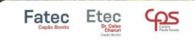
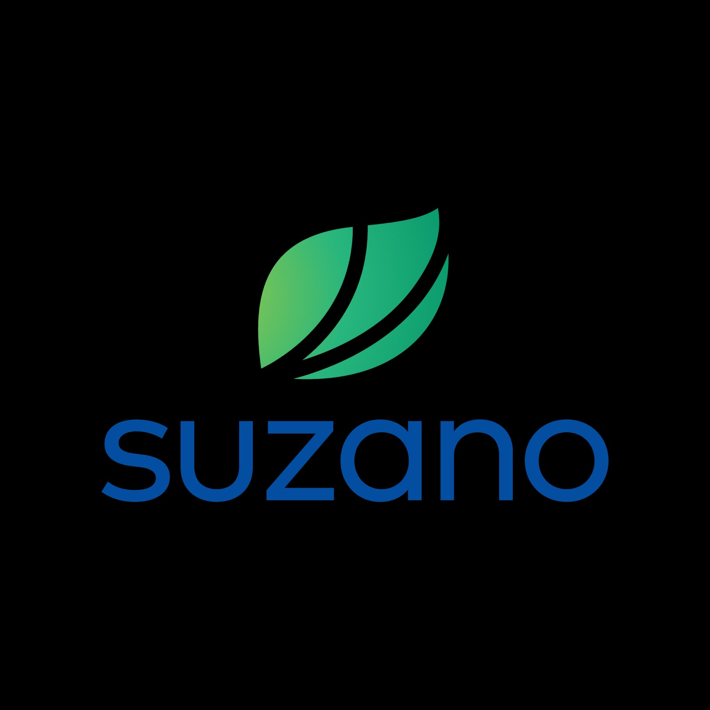
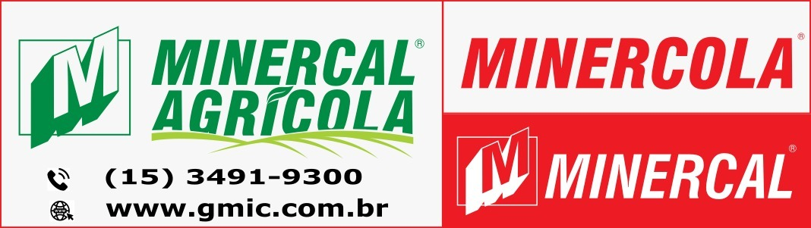
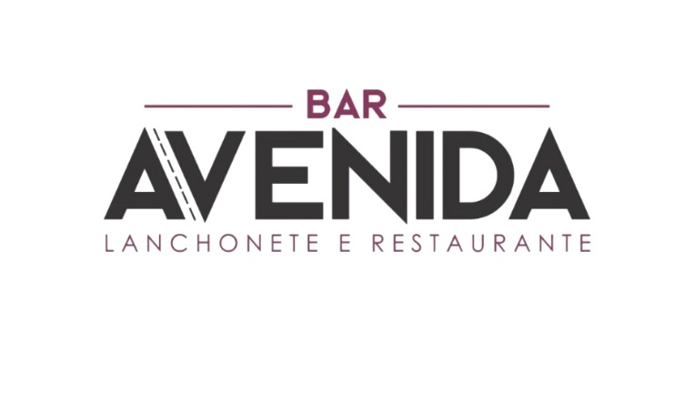
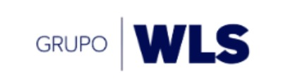
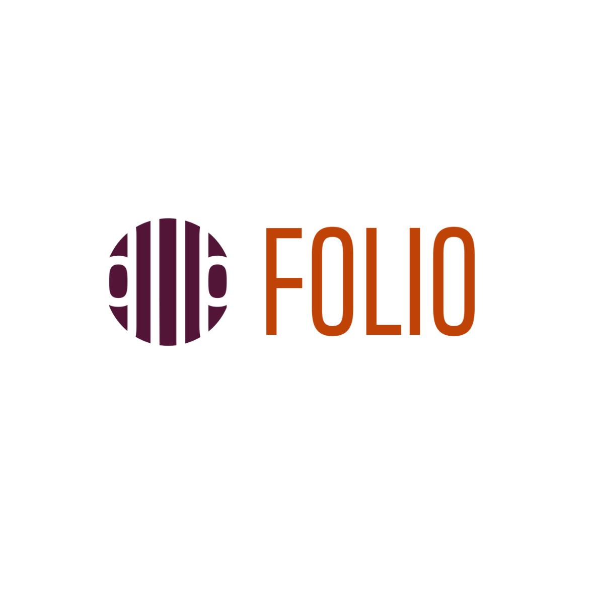
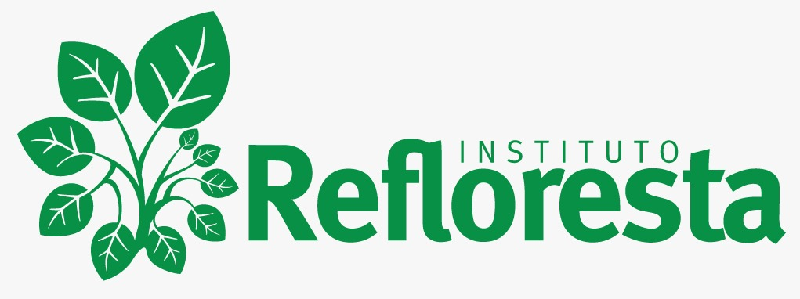
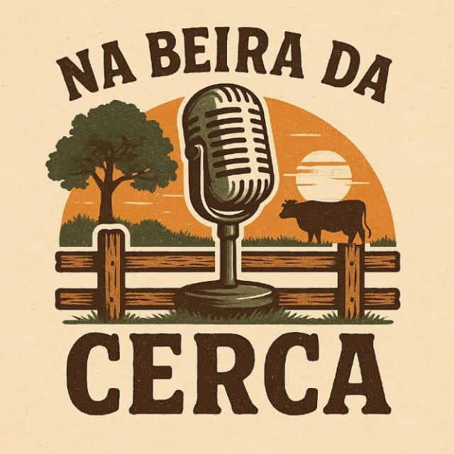

Realização, Patrocinadores e Apoio
O InterAgro 2026 conta com o apoio das seguintes instituições e parceiros.
Logos provisórios. As imagens abaixo foram extraídas do
grupo de WhatsApp da organização. Os nomes exibidos são genéricos — confirmar a identificação
de cada logo e substituir por arquivos nomeados corretamente antes da publicação.
Realização / Instituições

Patrocinadores




Apoio


